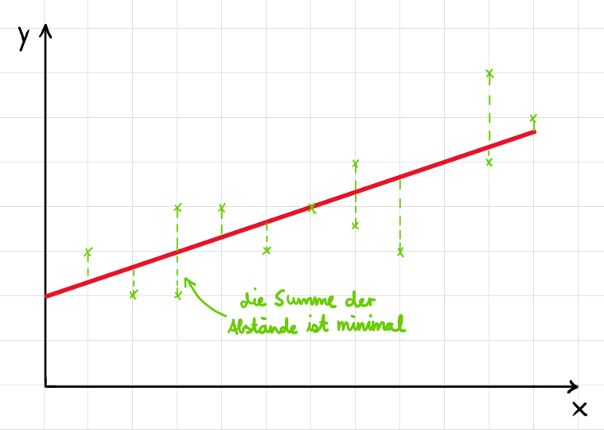
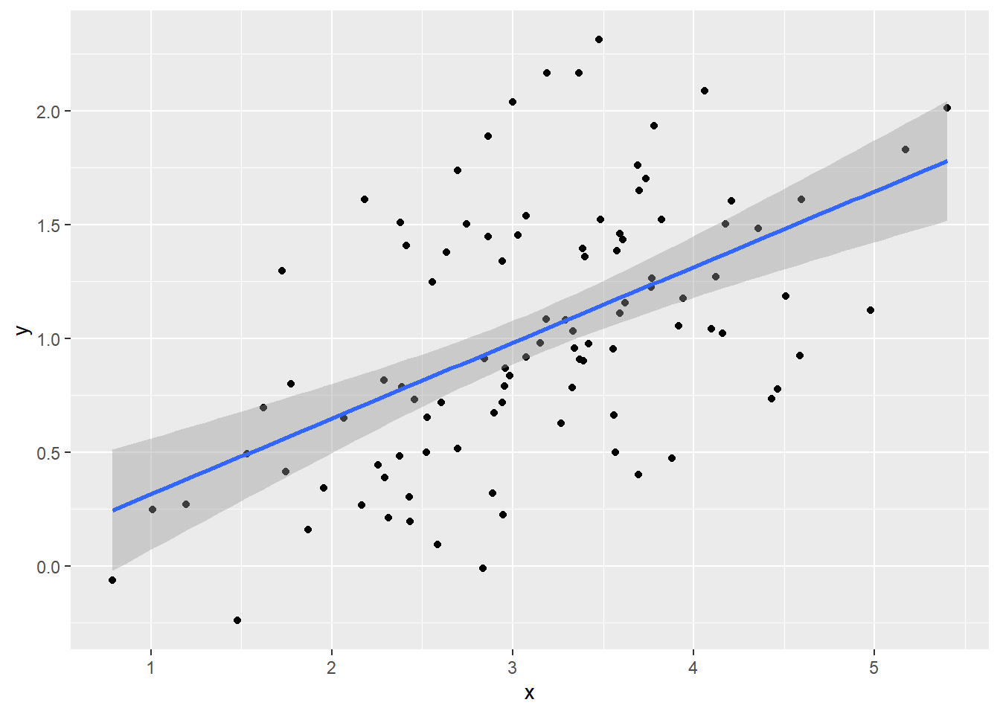

Auch wenn diese AG nur eine Einführung in die Arbeit mit Daten bieten kann, ist es von Vorteil, wenn man einige Methoden zu deren Auswertung kennt.
Methode der kleinsten Quadrate/Ordinary Least Squares
Die Methode der kleinsten Quadrate erlaubt es uns, eine optimale Ausgleichsgerade \(y = a + bx\) zu finden. Dabei wird die Gerade so gelegt, dass die Summe der Abstände aller Datenpunkte minimal wird:

Zur mathematischen Herleitung der Gleichung für diese Gerade geht es hier entlang.
Das lineare Modell und statistische Signifikanz
Nun wissen wir, dass es eine Methode gibt, mit der wir eine Ausgleichsgerade durch Punkte legen können. Das hat einen Nutzen für uns, wenn wir den Zusammenhang zwischen zwei Variablen erkennen wollen.
Simulieren wir einen Zusammenhang zwischen \(x\) und \(y\), indem wir Datenpunkte mit Koordinaten \(x\) und \(y\) erzeugen, die sich um die Gerade \(y = \frac{1}{3}x\) herum befinden, wobei wir einen Fehlerterm verwenden, damit die Punkte nicht genau auf der Geraden liegen.
── Attaching core tidyverse packages ──────────────────────── tidyverse 2.0.0 ──
✔ dplyr 1.1.4 ✔ readr 2.1.4
✔ forcats 1.0.0 ✔ stringr 1.5.1
✔ ggplot2 3.4.4 ✔ tibble 3.2.1
✔ lubridate 1.9.3 ✔ tidyr 1.3.0
✔ purrr 1.0.2
── Conflicts ────────────────────────────────────────── tidyverse_conflicts() ──
✖ dplyr::filter() masks stats::filter()
✖ dplyr::lag() masks stats::lag()
ℹ Use the conflicted package (<http://conflicted.r-lib.org/>) to force all conflicts to become errors
set.seed(1)# Daten sollen immer gleich erzeugt werdenx<-rnorm(n =100, mean =3, sd =1)fehler<-rnorm(n =100, mean =0, sd =0.5)y<-1/3*x+fehler# Ein Diagramm nur mit Angabe von x und yqplot(x, y)+geom_smooth(method ="lm")
Warning: `qplot()` was deprecated in ggplot2 3.4.0.
`geom_smooth()` using formula = 'y ~ x'

In diesem Fall haben wir folgenden Zusammenhang konstruiert: wenn \(x\) um eine Einheit größer wird, nimmt \(y\) um \(\frac{1}{3}\) Einheit zu.
Hätten wir diese Daten nicht selbst erzeugt, sondern aus der realen Welt entnommen, könnten wir uns jetzt fragen: gibt es in Wirklichkeit einen Zusammenhang zwischen \(x\) und \(y\)? Das können wir natürlich nie zu 100 Prozent überprüfen, aber wir können testen, ob wir den Zusammenhang mit großer Sicherheit annehmen können.
Dazu können wir in R mit der oben genannten Methode der kleinsten Quadrate die Ausgleichsgerade konstruieren und den sogenannten p-Wert für die Steigung dieser Geraden ablesen:
ausgleichsgerade<-lm(y~x)# Konstruktion einer Ausgleichsgeradenausgleichsgerade%>%summary()# Anzeige der Werte von a (Intercept) und b (x) für diese Gerade
Call:
lm(formula = y ~ x)
Residuals:
Min 1Q Median 3Q Max
-0.93842 -0.30688 -0.06975 0.26970 1.17309
Coefficients:
Estimate Std. Error t value Pr(>|t|)
(Intercept) -0.01726 0.17424 -0.099 0.921
x 0.33280 0.05386 6.179 1.48e-08 ***
---
Signif. codes: 0 '***' 0.001 '**' 0.01 '*' 0.05 '.' 0.1 ' ' 1
Residual standard error: 0.4814 on 98 degrees of freedom
Multiple R-squared: 0.2803, Adjusted R-squared: 0.273
F-statistic: 38.18 on 1 and 98 DF, p-value: 1.479e-08
Der p-Wert ist unter Pr(>|t|) angegeben. Vereinfacht gesagt gibt er an, wie wahrscheinlich es ist, dass die Steigung der Geraden mindestens so groß ist, wie sie durch die Methode der kleinsten Quadrate berechnet wurde. Die Mathematik dahinter ist hier beschrieben (TODO).
Liegt der p-Wert unter 0,05, dann sagt man, dass der Effekt von \(x\) auf \(y\)signifikant ist. In diesem Fall ist der p-Wert deutlich unter 0,05. Daher können wir annehmen, dass es einen Effekt von \(x\) auf \(y\) gibt.
Ändern wir unsere Daten so, dass die Datenpunkte deutlich weiter um die Gerade herum gestreut sind:
set.seed(1)x<-rnorm(n =100, mean =3, sd =1)fehler<-rnorm(n =100, mean =0, sd =5)# Der Fehler wird größery<-1/3*x+fehlerqplot(x, y)+geom_smooth(method ="lm")
Call:
lm(formula = y ~ x)
Residuals:
Min 1Q Median 3Q Max
-9.3842 -3.0688 -0.6975 2.6970 11.7309
Coefficients:
Estimate Std. Error t value Pr(>|t|)
(Intercept) -0.1726 1.7424 -0.099 0.921
x 0.3280 0.5386 0.609 0.544
Residual standard error: 4.814 on 98 degrees of freedom
Multiple R-squared: 0.00377, Adjusted R-squared: -0.006395
F-statistic: 0.3709 on 1 and 98 DF, p-value: 0.5439
In diesem Fall liegt der p-Wert bei 0,544, was deutlich über 0,05 ist. Wir können also nicht ablehnen, dass es in Wirklichkeit keinen Effekt von \(x\) auf \(y\) gibt.